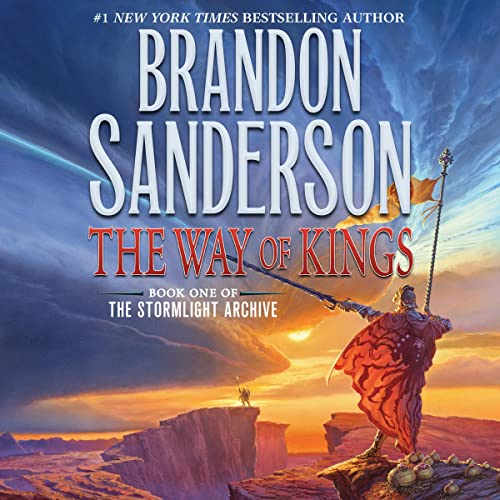

The Stormlight Archives
For updates on everything Stormlight Archives for TV and film, this is just the place to be!

The Stormlight Archive has for a long time been seen as far too large and ambitious to ever leave the pages, however with how far TV has come, and with better and better technology, it might finally be possible. In a livestream this year, Brandon Sanderson teased that Hollywood has given him some generous offers on a potential series, which means hopefuly we will be able to see Roshar in all it's glory sometime in the near future.
A longtime concern with the Stormlight Archive among fans has been that it's simply just too bizzare for television, and only works when imagined by the readers mind. Roshar is a truly alien world, "a coral reef lifted above the sea and left for centuries to human hands" It is of course enhabited by the mysterious Spren, who would need to be brought to life by CGI and woudl be a constant part of the drama. And none of that even touches the massive battles, gatherings and setpeices that would need to be brought to life. All of that is to say that a longstanding concern has been that it would simply cost too much money to make on a series that already has not been proven to be success on television.
Stormlight Archive TV Show Update

Botanicaxu, UNIVERSEB
"But our laws will claim innocent men - for all judges are flawed, as is our knowledge. Eventually, you will execute someone who does not deserve it. This is the burden society must carry in exchange for order."
- Vargo Taravangian.
Botanicaxu, Deviant Art
“Since we all go to the same place in the end, the moments we spent with each other are the only things that do matter. The times we helped each other.”
- Tien.

u/luggerart, Reddit
"It is rare to find a human who can fight in the skies well enough to be a challenge for me. I shall relish this chance."
- Lady Leshwi.
"Somebody has to start. Somebody has to step forward and do what is right, because it is right."
- Kaladin Stormblessed.
u/Quiet-Might6773, Reddit
“Welcome to the Party!”
- Adolin Kholin.
“Every time I turn around, it seems the world has changed somehow.”
- Renarin Kholin.

Kevin Keele, Artstation
“Sometimes a hypocrite is nothing more than a man in the process of changing.”
- Dalinar Kholin.
| Date released | Title | US Cover |
|---|---|---|
| 2010 | The Way of Kings |  |
| 2014 | Words of Radiance |

|
| 2017 | Oathbringer |

|
| 2020 | Rhythm of War |

|